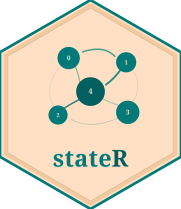

Package index
-
nest_fo() - This function estimates the fractional occupancy or probability of a series of states.'
-
nest_dwell() - This function estimates the dwelling time or continuous occupancy of a series of states.'
-
clusters_markov() - This function reports the likelihood of transition between different states. The analysis is performed in a Markovian manner, i.e., without memory and all states have the same relevance.'
-
dwellCount() - This function obtains dwelling times for states from a list.